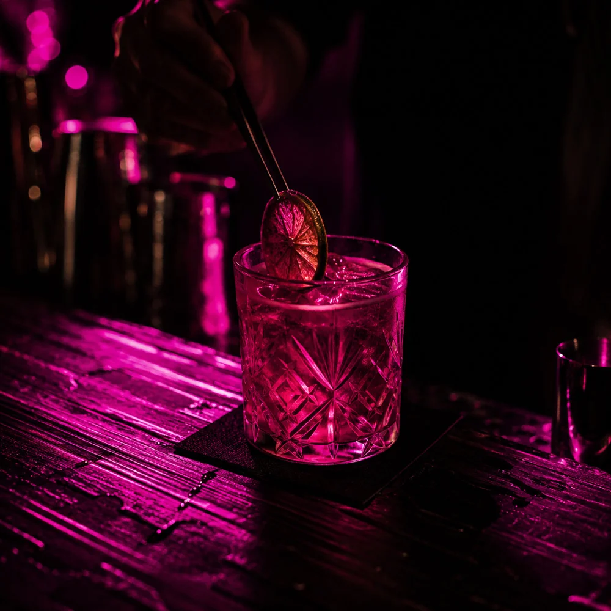
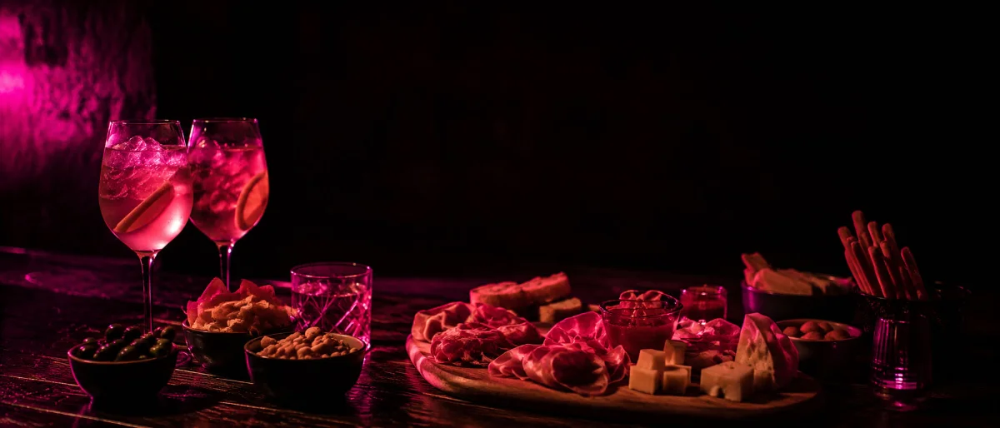
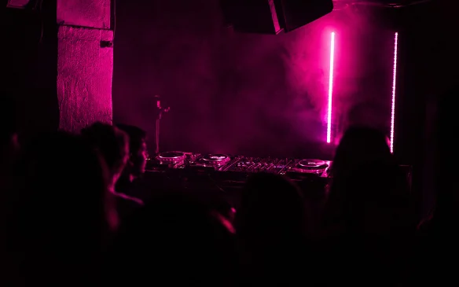
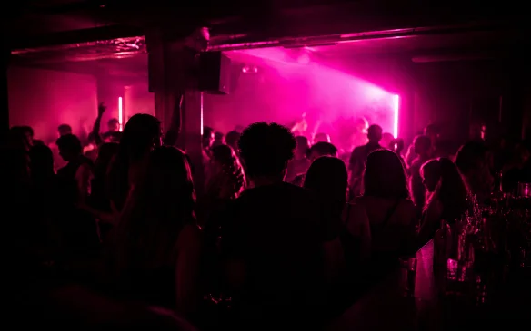
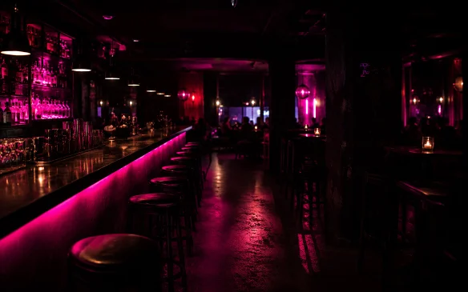

Nati da tre amici,
cresciuti a Roma
BEVO è un cocktail bar e pub a Roma, in zona Furio Camillo.
BEVO nasce dall'idea di tre soci che hanno voluto creare un posto dove bere bene, mangiare qualcosa di buono e stare in compagnia. Cocktail curati, musica giusta e serate a tema, senza prendersi troppo sul serio.


L'aperitivo, fatto bene
18:00 — 21:00
Taglieri, sfizi e drink della casa, ogni giorno dalle 18 alle 21. Il modo giusto per iniziare la serata da BEVO.
Da12€
Prenota il tuo tavolo (si apre in una nuova scheda)


Non solo drink
Da BEVO la programmazione cambia spesso — il calendario aggiornato è sempre su Instagram.
Segui @bevo.roma (si apre in una nuova scheda)Un assaggio delle nostre serate
Scatti dal locale, tra drink, gente e atmosfera.
Vieni a trovarci
Via Giovanni Villani, 48 — Furio Camillo, Roma
BEVO
Via Giovanni Villani, 48
00179 Roma — Furio Camillo
Caricando la mappa accetti i cookie di Google Maps.
Apri in Google Maps (si apre in una nuova scheda) Indicazioni stradali (si apre in una nuova scheda)